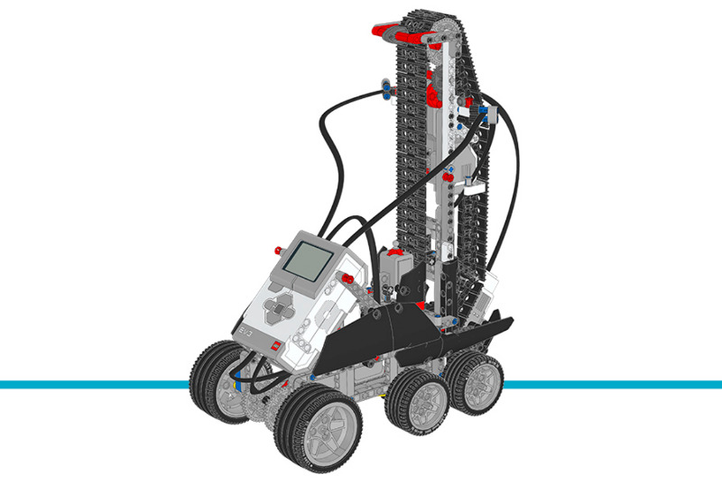

Stair Climber¶
This example project makes the Stair Climber climb a number of steps that you select using the EV3 Brick buttons. For more details, be sure to check out the comments in the program below.
Building instructions
Click here to find all building instructions for the Expansion Set Models, or use this link to go to the Stair Climber directly.

Figure 32 Puppy
Example program
#!/usr/bin/env pybricks-micropython
"""
Example LEGO® MINDSTORMS® EV3 Stair Climber Program
---------------------------------------------------
This program requires LEGO® EV3 MicroPython v2.0.
Download: https://education.lego.com/en-us/support/mindstorms-ev3/python-for-ev3
Building instructions can be found at:
https://education.lego.com/en-us/support/mindstorms-ev3/building-instructions#building-expansion
"""
from pybricks.hubs import EV3Brick
from pybricks.ev3devices import Motor, GyroSensor, TouchSensor
from pybricks.parameters import Port, Direction, Button
from pybricks.tools import wait
from pybricks.media.ev3dev import Font, SoundFile
# Initialize the EV3 brick.
ev3 = EV3Brick()
# Configure the front motor, which drives the front wheels. Set the
# motor direction to counterclockwise, so that positive speed values
# make the robot move forward.
front_motor = Motor(Port.B, Direction.COUNTERCLOCKWISE)
# Configure the rear motor, which drives the rear wheels. Set the motor
# direction to counterclockwise, so that positive speed values make the
# robot move forward.
rear_motor = Motor(Port.A, Direction.COUNTERCLOCKWISE)
# Configure the lift motor, which lifts the rear structure. It has an
# 8-tooth, a 24-tooth, and a 40-tooth gear connected to it. Set the
# motor direction to counterclockwise, so that positive speed values
# make the rear structure move upward.
lift_motor = Motor(Port.D, Direction.COUNTERCLOCKWISE, [8, 24, 40])
# Set up the Gyro Sensor. It is used to measure the angle of the robot.
# Keep the Gyro Sensor and EV3 steady when connecting the cable and
# during start-up of the EV3.
gyro_sensor = GyroSensor(Port.S2)
# Set up the Touch Sensor. It is used to detect when the rear
# structure has moved to its maximum position.
touch_sensor = TouchSensor(Port.S3)
# Using a very large font
big_font = Font(size=24)
ev3.screen.set_font(big_font)
# Initialize the rear structure. In order to move the structure both
# the rear motor and lift motor must run in sync. First, the rear
# motor moves the robot backward while the lift motor moves the rear
# structure up until the Touch Sensor is pressed. Second, the rear
# motor moves the robot forward while the lift motor moves the rear
# structure down for a set amount of degrees to move to its starting
# position. Finally, the lift motor resets the angle to "0." This
# means that when it moves to "0" later on, it returns to this starting
# position.
rear_motor.dc(-20)
lift_motor.dc(100)
while not touch_sensor.pressed():
wait(10)
lift_motor.dc(-100)
rear_motor.dc(40)
wait(50)
lift_motor.run_angle(-145, 510)
rear_motor.hold()
lift_motor.run_angle(-30, 44)
lift_motor.reset_angle(0)
gyro_sensor.reset_angle(0)
# Initialize the steps variable to 0.
steps = 0
# This loop checks the Brick Buttons to update and display the steps
# variable. It repeats until the Center Button is pressed.
while True:
# Display the steps variable on the screen.
ev3.screen.clear()
ev3.screen.draw_text(70, 50, steps)
wait(200)
# Wait until any Brick Button is pressed.
while not any(ev3.buttons.pressed()):
wait(10)
# Check whether Up Button is pressed, and increase the steps
# variable by 1 if it is.
if Button.UP in ev3.buttons.pressed():
steps += 1
# Check whether Down Button is pressed, and decrease the steps
# variable by 1 if it is.
elif Button.DOWN in ev3.buttons.pressed():
steps -= 1
# Make sure the steps variable is not a negative number.
if steps < 0:
steps = 0
# If the Center Button is pressed, break out of the loop.
elif Button.CENTER in ev3.buttons.pressed():
break
# This loop climbs the stairs for the amount of steps specified in the
# steps variable. It repeats until the steps variable is 0.
while steps > 0:
# Run the front and rear motors so the robot moves forward.
front_motor.dc(100)
rear_motor.dc(90)
# Keep moving until the robot is at an angle of at least 10 degrees.
while gyro_sensor.angle() < 10:
wait(10)
# Run the lift motor to move the rear structure up, while
# simultaneously running the front and rear motors.
lift_motor.dc(90)
front_motor.dc(30)
rear_motor.dc(15)
# Keep moving the rear structure up until the Touch Sensor is
# pressed, or the robot is at an angle of less than -3 degrees.
while not touch_sensor.pressed():
if gyro_sensor.angle() < -3:
break
wait(10)
lift_motor.hold()
# Move the robot forward for some time using the front and rear
# motors.
front_motor.dc(60)
rear_motor.dc(100)
wait(1300)
# Play a sound and pull the rear structure up so it gets back to
# its starting position. Keep moving forward slowly by
# simultaneously running the front and rear motors.
ev3.speaker.play_file(SoundFile.AIR_RELEASE)
front_motor.dc(30)
rear_motor.dc(30)
lift_motor.run_target(160, 0)
# Update the "steps" variable and display it on the screen.
steps -= 1
ev3.screen.clear()
ev3.screen.draw_text(70, 50, steps)
# Settle the robot at the top of a step and end the program.
front_motor.dc(100)
rear_motor.dc(90)
wait(2000)
front_motor.hold()
rear_motor.hold()
wait(5000)